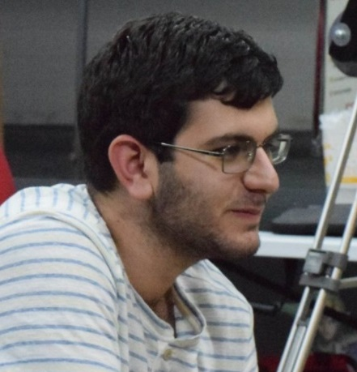
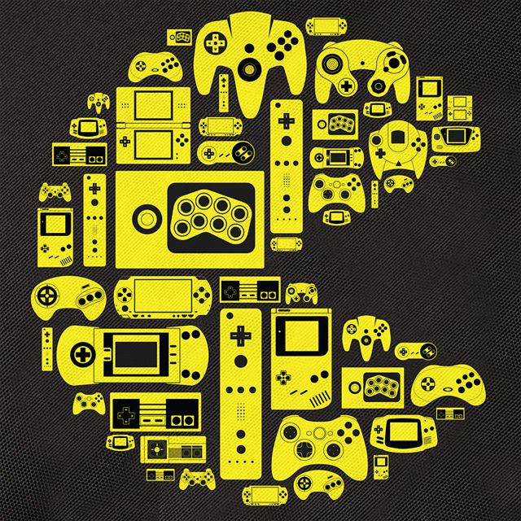
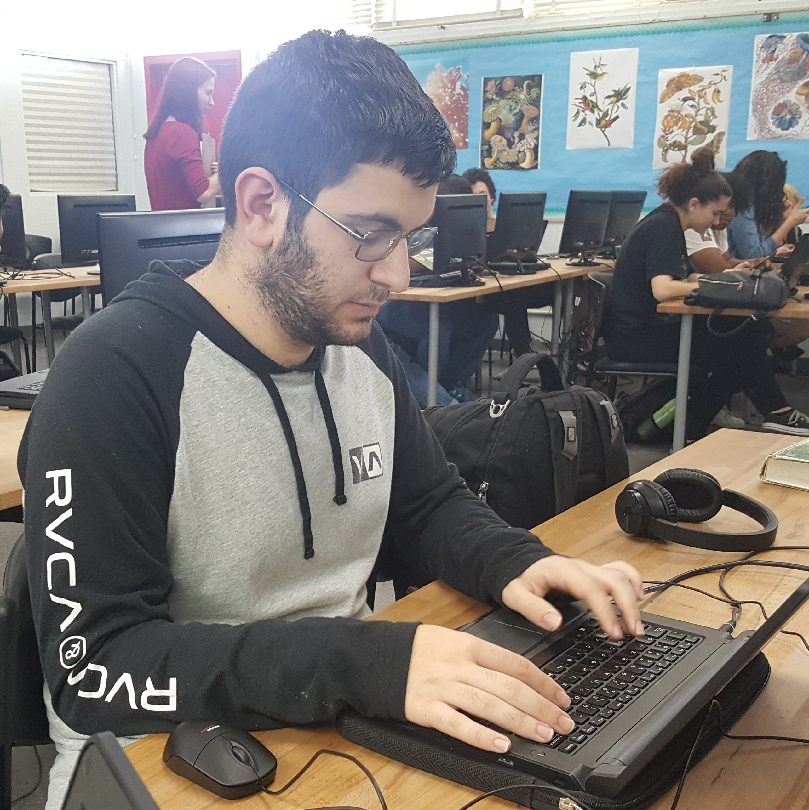

My name is Ludvig Allen Basmajyan, a Senior at PHS and in my 4th year in the App Academy. My interests are coding, gaming, and just trying to make the most out of every single day. My skills involve keeping calm under pressure and organizing my time when presented with a limited time schedule. In my spare time, I tend to study, message friends or play video games, both retro and modern. My favorite classes are Mathematics and App Academy, since I love working with numbers and I love making websites. My love from numbers stems from being able to do computations quickly and having a family of engineers and financial advisors. My love of websites comes from making new application that others can use while also feuling my creative side.



Here is a gallery starring me and all items that can represent me. I am seen pictured on the far left and shown coding on the mid right of the gallery. I love playing video games, especially retro (as seen on the mid left) and I have an affinity for mathematics (which explains the picture on the far right).